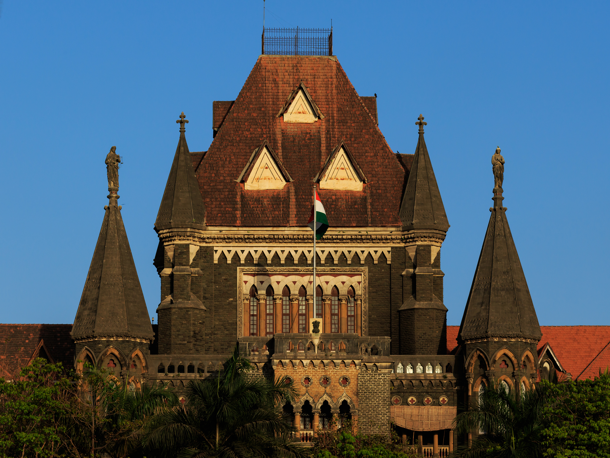

Bombay High Court
Explore the history and character of this remarkable Mumbai landmark.
Description
The Bombay High Court is one of India's oldest High Courts and is an important landmark of Mumbai. The historic building is known for its impressive Gothic Revival architecture and detailed stonework.
History
The Bombay High Court was established in 1862 under the Indian High Courts Act of 1861. The present High Court building was designed by British architect James Fuller and was completed in 1878.
The building features Gothic Revival architectural elements, including pointed arches, towers and decorative stonework. It continues to serve as an important centre of the judicial system in Maharashtra and Goa.